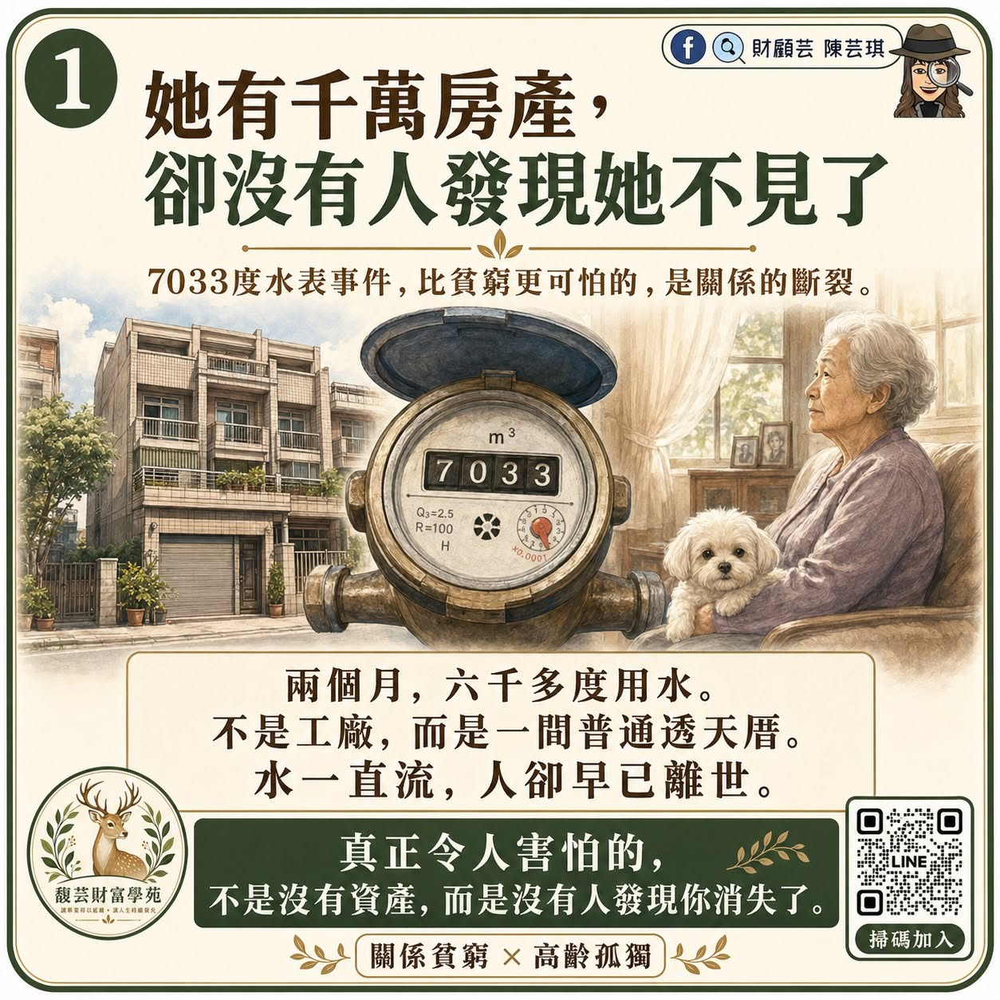
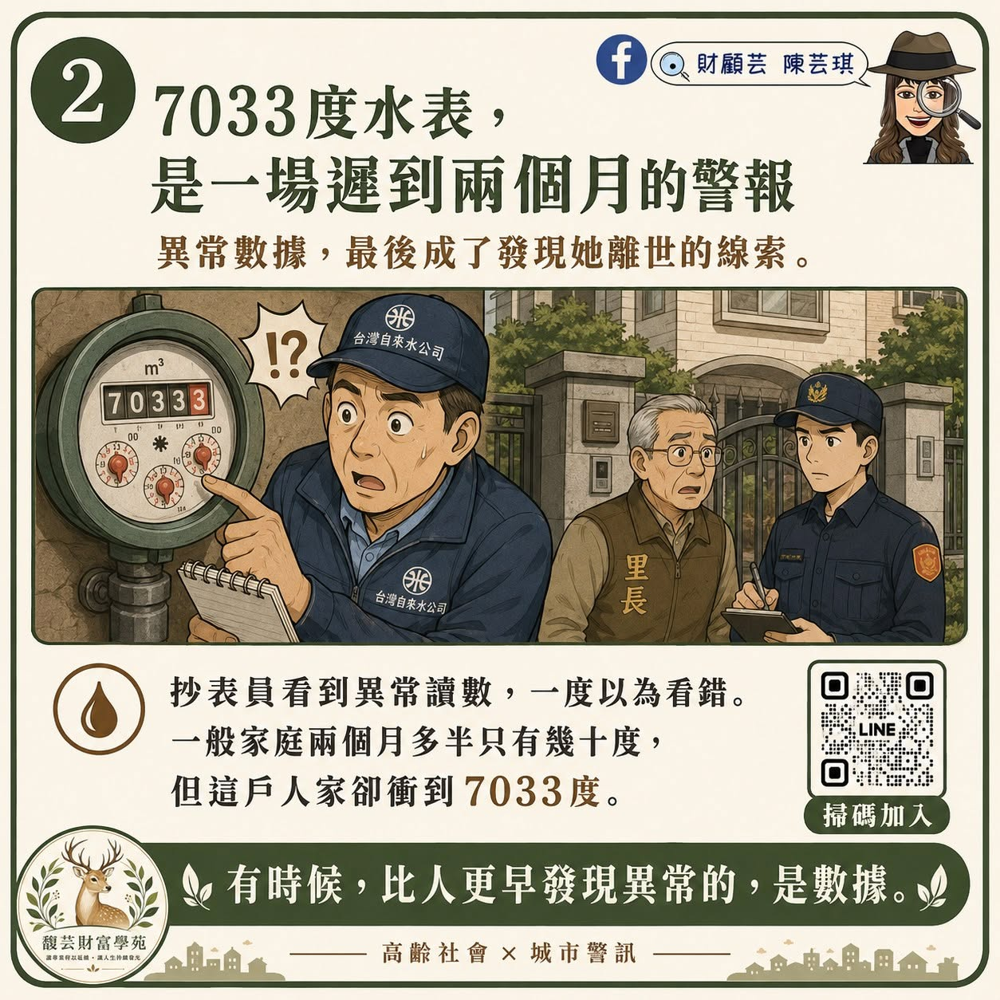
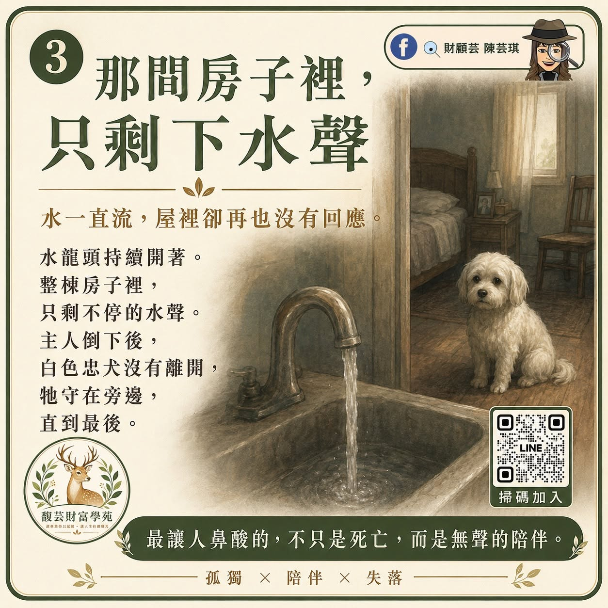
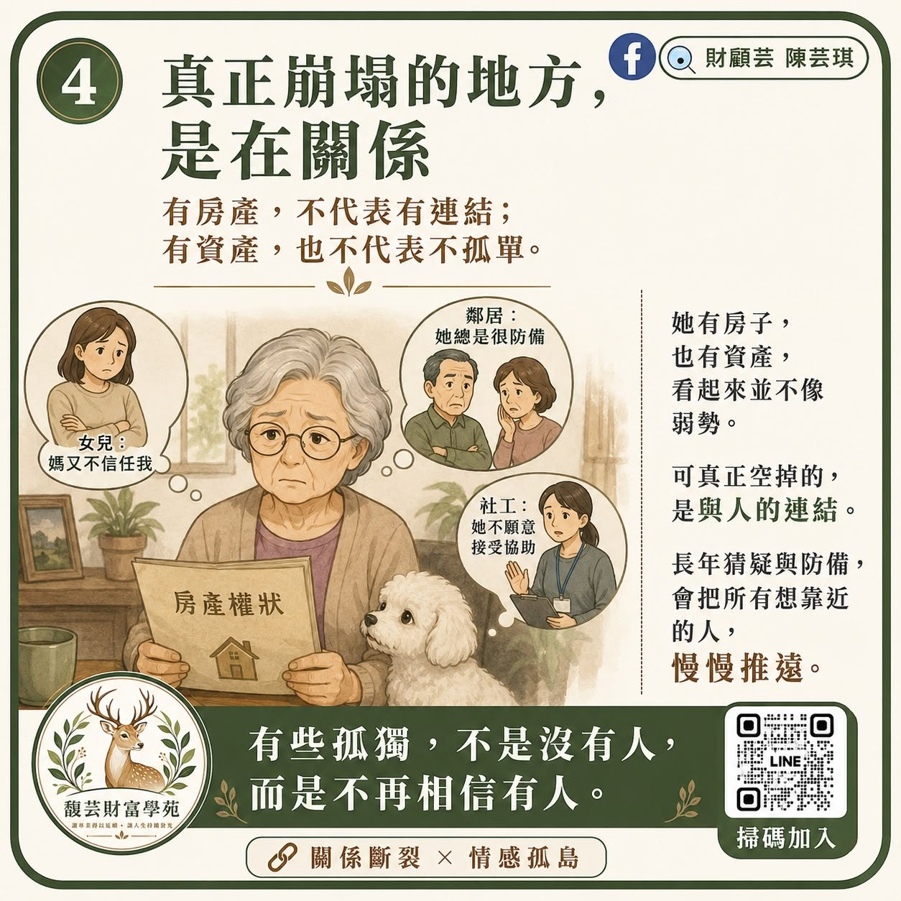
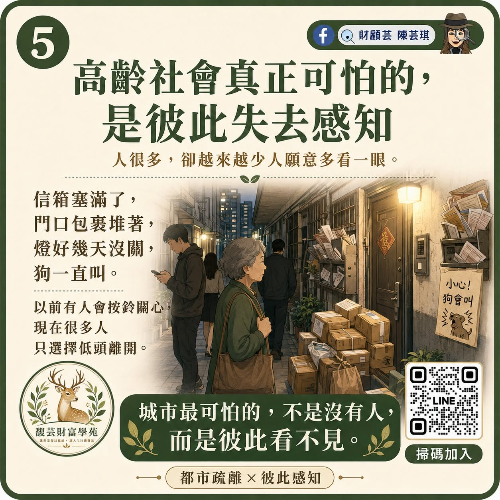
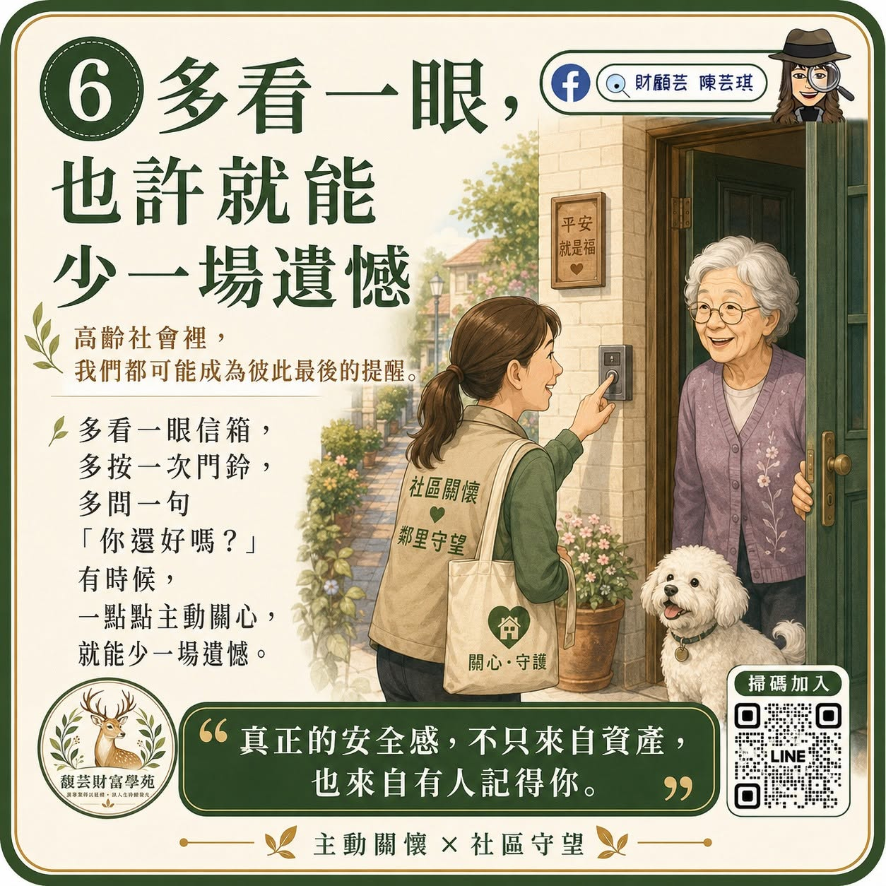

財富傳承系列・晚年照護篇
有資產，也要有人能及時靠近
真正的安全感，不只來自房子與存款，也來自有人記得、有人能接住。

財富傳承晚年照護支持網意定監護
有房子、有存款、有生活能力，不代表晚年真的安全。真正的風險，有時不是缺少資產，而是身邊沒有一個能及時發現異常、願意靠近的人。
2025 年 11 月，台中北屯一位 82 歲獨居長者，被發現在家中離世多時。住家兩個月用水異常增加近 6000 度，水表後續累積到 7033 度；抄表人員發現異常並通知里長，警方、社工到場後，才揭開這起令人難過的事件。
晚年的安全感，不只是有沒有錢，而是有沒有人知道自己還好不好。
傳承，也包括還在時如何被照顧
很多人談傳承，先想到房子、存款、保單與資產怎麼分。但更成熟的規劃，也包括：「我還在的時候，自己能不能被好好照顧？」
- 突然失聯時，誰會發現？
- 身體出狀況時，誰能協助？
- 無法清楚表達時，誰能依法協助處理生活與財產事務？
- 需要長期照護時，資源與費用從哪裡來？
- 家人意見不同時，重要心意是否已留下清楚紀錄？
先建立三層晚年支持網
第一層｜有人能發現
選定固定聯絡人與備援聯絡人，約定多久沒有回應就啟動確認；也可加入社區關懷、定期訪視或適合自己的科技輔助。
第二層｜資料能接手
整理緊急聯絡、常用藥物、醫療院所、保單、照護資源與重要文件位置，讓真正需要協助時，不必從零開始猜。
第三層｜心意有制度承接
財產安排可評估遺囑或信託；未來若可能因心智狀況無法表意，可了解意定監護；醫療選擇則應另行了解預立醫療照護諮商與預立醫療決定。
幾種安排，處理的是不同問題
- 遺囑：主要處理身後財產與其他依法可安排事項，須符合民法規定的方式。
- 信託：依契約把特定財產交由受託人管理或照顧指定目的，需按個案設計。
- 意定監護：預先選定未來經法院監護宣告時的監護人，不等同一般授權，也不直接取代醫療決定。
- 預立醫療決定：須先進行預立醫療照護諮商，用於法律規定的特定臨床條件下，表達接受或拒絕維持生命治療等意願。
傳承最深的愛，不只是把財產留給家人，也是先讓自己在人生後半場被好好照顧。
完整圖集
從事件到可以開始做的事
依原作品順序閱讀 1～6 張，手機可直接向下滑閱。





先從一位聯絡人開始
把晚年的支持網慢慢整理起來
不必一次完成所有安排。先找出一位固定聯絡人，說清楚多久沒回應時，需要主動確認。
加入財顧芸官方 LINE繼續閱讀
資料與制度提醒
本文提供一般整理方向，不是個案法律、醫療或信託建議。
這些事，愈早談愈輕鬆。
如果不知道從哪裡開頭，可以先聊聊。